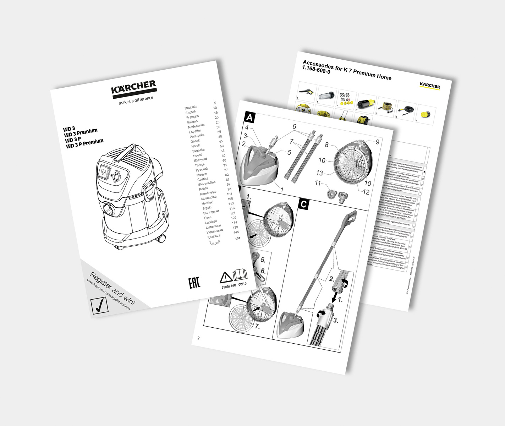
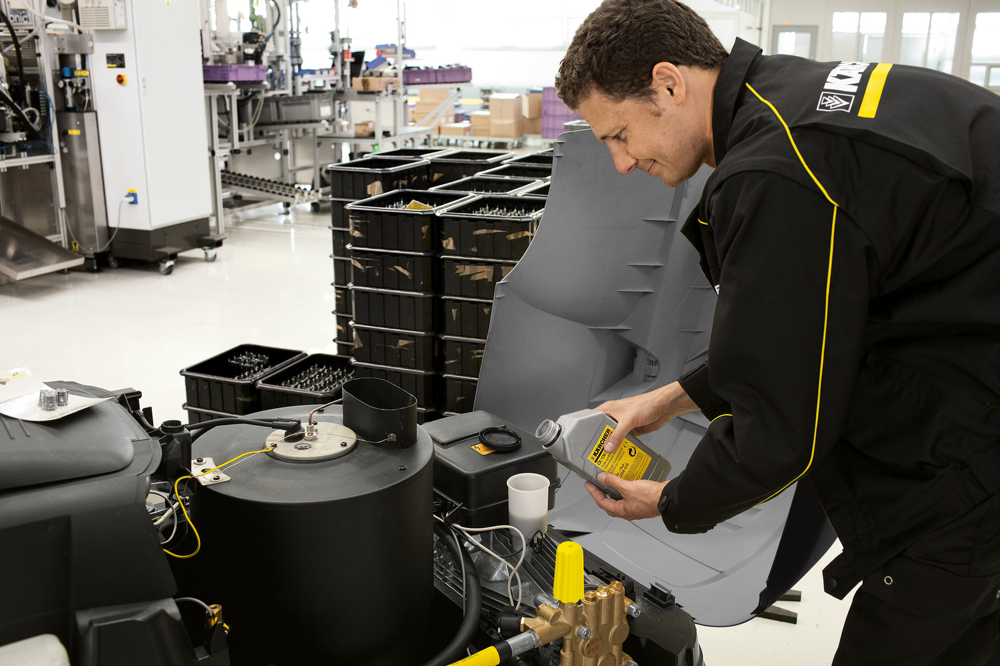

Link de conexión con el catalogo
Acceso a catalogo DisisPlus
Descarga archivos PFD
-
Cursos básicos

- Uso de catalago DisisPlus
- Electrostática y efectos sobre placas electrónicas
- Motores a combustión
- Motores eléctricos Karcher para limpiadores de alta presión
-
Curso Limpiadores de alta presión